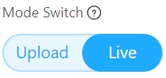
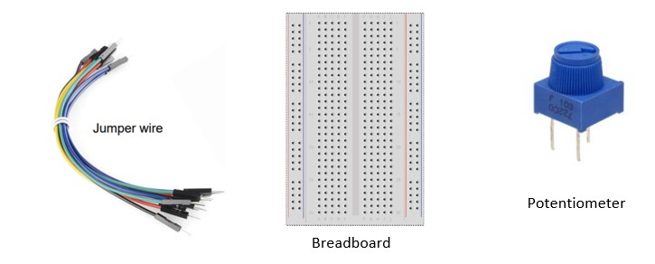
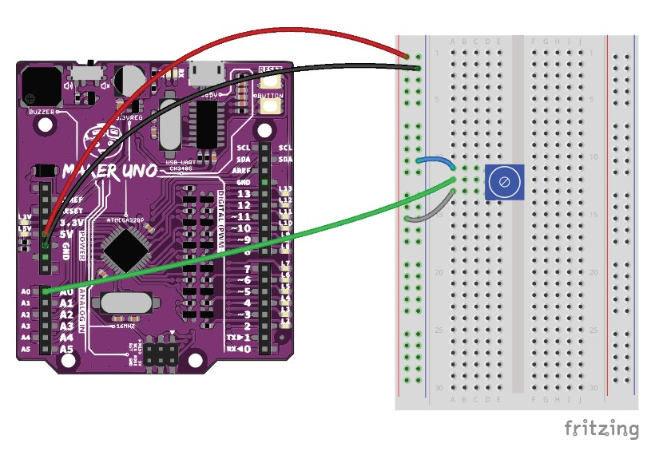
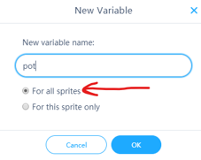
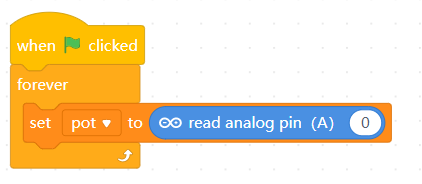
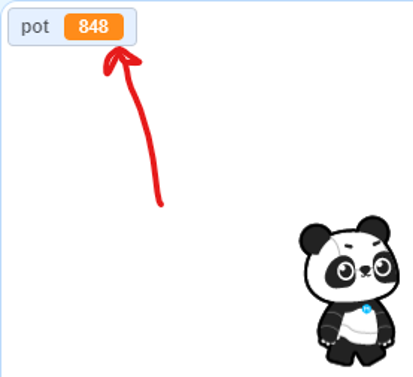
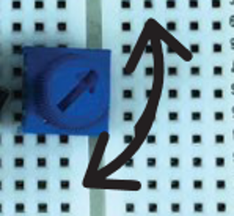
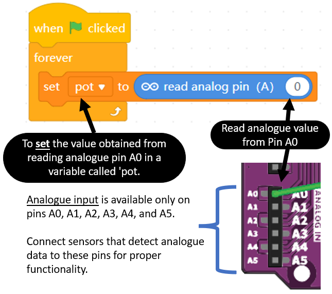
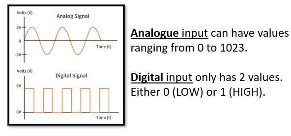

Project 8: Potentiometer
Objective: To program the microcontroller to read analogue data from a potentiometer
Before we begin, switch to Live Mode

-
Prepare the following components:

-
Construct the following circuit:

-
In the coding toolbox, click
 .
. -
Then click
 .
. -
Enter the new variable name "pot", ensure the option "For all sprites" is selected.

By selecting “for all sprites” the value of this variable will be accessible in the sprite section. However, this only works on Live Mode. In Upload mode, you must use Upload Mode Broadcast extension."
-
Then write this code.

-
Press the
 to execute the code.
to execute the code. -
Observe the value of the pot variable at the top left of the sprite screen.

-
Try turning the potentiometer clockwise and counter-clockwise.

-
The value in the pot variable should change when you turn the potentiometer.
-
Can you find out what is the highest and lowest number that you can get when turning the potentiometer?
Explanation

